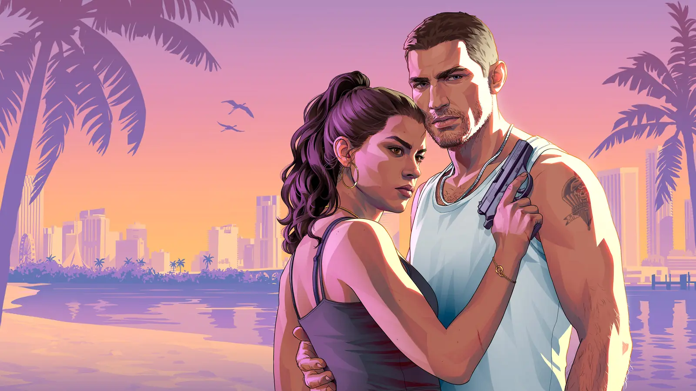
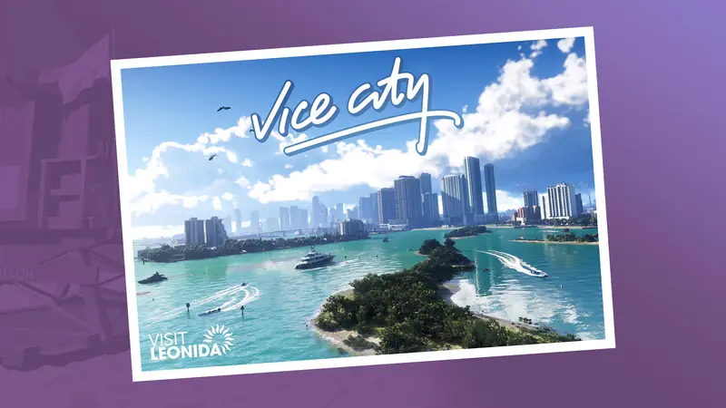
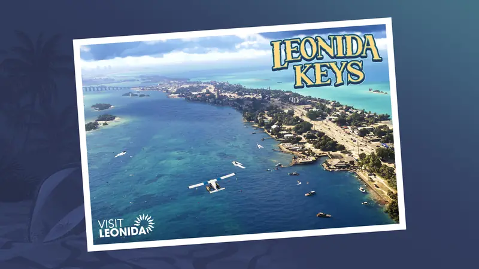
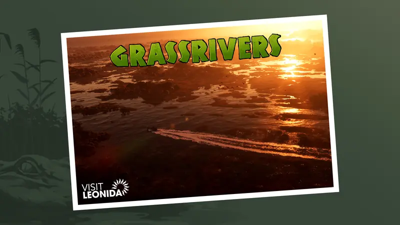
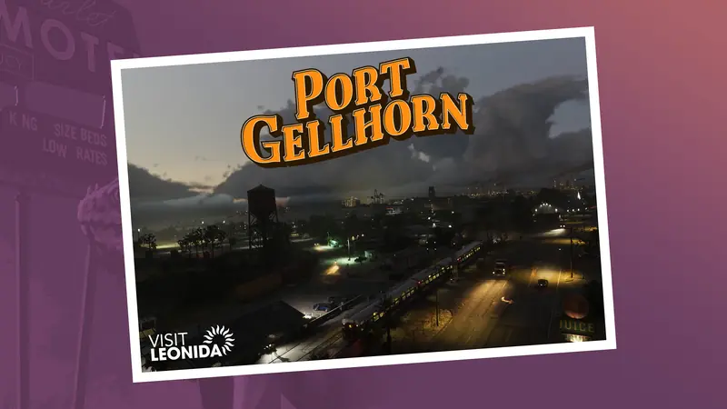
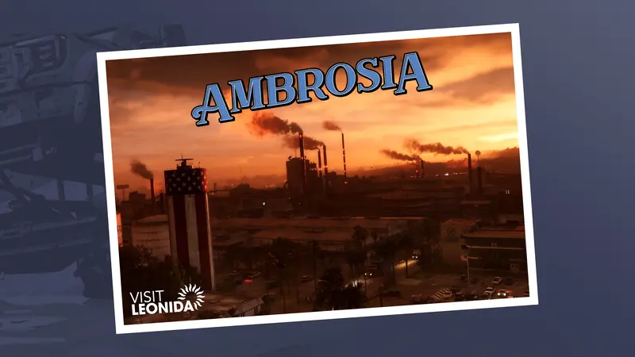
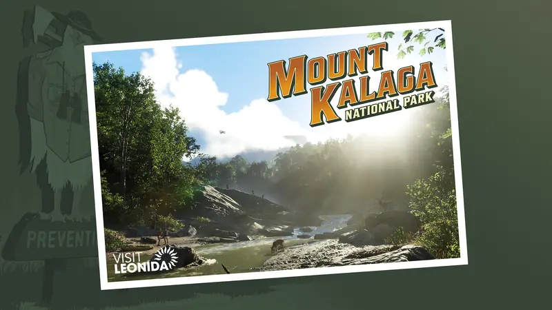

GTA 6 ya está disponible · PS5 y Xbox Series X|S
Guía de GTA 6 en español
Lo que más se está buscando estos días, comprobado y sin spoilers de la historia: dinero, trucos, secretos y cómo empezar con buen pie.
🔴 Directo: hoy jueves 19 a las 17:00 (hora de España). Mis primeras horas en GTA 6. Habéis votado empezar por la historia de Jason y Lucía. Entra aquí.
Cómo ganar dinero rápido en GTA 6
Al principio vas justo de dinero y casi todo cuesta caro. Lo que más conviene es avanzar en la historia, porque cada capítulo desbloquea formas de ganar mucho más. Mientras tanto:
- Atraca a gente por la calle: saca el arma, apunta a alguien y pulsa triángulo (Y en Xbox) para pedirle lo que lleva.
- Atraca tiendas: gasolineras, licorerías y comida rápida. Apunta al dependiente, vacía la caja y vete antes de que llegue la policía.
- Capítulo 2, Moses: compra coches robados sin localizador. Al acercarte a un coche, el juego te dice si tiene sistema de seguridad y localizador. Suelen pagar 1.000 $ o más.
- Capítulo 3: coches con localizador normal en los talleres de pintura (unos 4.000 $ un buen coche) y atracos a joyerías (entre 10.000 y 25.000 $).
- Final del capítulo 4: las cámaras acorazadas de los bancos grandes, hasta 205.000 $ por atraco. Es lo que más paga del juego.
⚠️ El error que más dinero cuesta: el límite de efectivo es de 20.000 $ y si mueres puedes perder lo que llevas encima. Ingrésalo en un cajero o guárdalo en el escondite de Jason, bajo las tablas del suelo de su habitación.
¿Hay trucos en GTA 6?
Sí: hay 61 trucos, pero se desbloquean al terminar la historia y la mayoría pide además superar un desafío concreto. Cuidado con las listas que circulan por redes: una imagen con 28 «trucos» se ha hecho viral y no funciona.
Cómo se meten en PS5: pulsa arriba en la cruceta para sacar el móvil, mantén L1 y pulsa R1, y escribe la combinación con la cruceta. En Xbox es igual con LB y RB. Usarlos desactiva el guardado y los trofeos en esa sesión, así que guarda antes.
El perro de la moto de agua
Si te quedas en mar abierto, lejos de la costa, acabarás oyendo ladridos: es un perro con chaleco y gafas que llega en moto de agua a rescatarte. Si lo sigues hasta su isla, te trae una cartera con dinero (en mi partida, 1.218 $).
Tus primeros pasos en Leonida
Ve marcando lo que tengas hecho. Se queda guardado en tu navegador.
Bienvenido a Leonida
GTA 6 pasa en Leonida, un estado inspirado en Florida. Estas son las postales oficiales de sus zonas:






¿No te cabe GTA 6? Pide hasta 212 GB. Te dejo el SSD que pondría en cada consola y cómo se instala en 5 minutos.
¿A qué hora salió en tu país?
GTA 6 se desbloqueó a las 00:00 del 19 de noviembre en la hora de cada país. Aquí tienes la hora exacta de cada uno traducida a la hora de España:
| País (a las 00:00 allí) | Hora en España |
|---|---|
| España | 00:00 del jueves 19 |
| México | 07:00 del jueves 19 |
| Argentina | 04:00 del jueves 19 |
| Colombia | 06:00 del jueves 19 |
| Chile | 04:00 del jueves 19 |
| Perú | 06:00 del jueves 19 |
| Venezuela | 05:00 del jueves 19 |
| Ecuador | 06:00 del jueves 19 |
| Uruguay | 04:00 del jueves 19 |
| Paraguay | 04:00 del jueves 19 |
| Bolivia | 05:00 del jueves 19 |
| República Dominicana | 05:00 del jueves 19 |
| Guatemala | 07:00 del jueves 19 |
| Costa Rica | 07:00 del jueves 19 |
| Panamá | 06:00 del jueves 19 |
| El Salvador | 07:00 del jueves 19 |
| Honduras | 07:00 del jueves 19 |
Fuentes de la guía: guías de dinero y trucos de GameSpot, PowerPyx, Red Bull, 3DJuegos y Leonida Verse (19 nov 2026), y mi propia partida. Si algo cambia con un parche, lo actualizo.
Más trucos de GTA 6 cada día
Cada día subo guías, secretos y gameplay de GTA 6, y hago directos jugando.
Suscríbete a Godca en YouTube